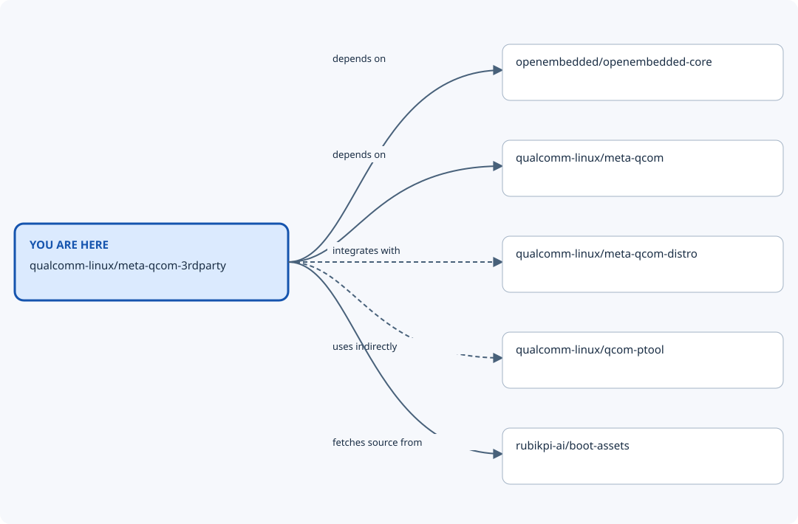

Repository map: qualcomm-linux/meta-qcom-3rdparty¶
You are here: qualcomm-linux/meta-qcom-3rdparty. This view shows recorded nearby repositories, including
both incoming and outgoing relationships. The diagram prioritises software/build
connections when present; the table also records shared automation. Dashed lines mean optional or indirect
relationships; the table states when each connection applies.

From |
Relationship |
To |
When it applies |
Evidence |
|---|---|---|---|---|
qualcomm-linux/meta-qcom-3rdparty |
depends on |
openembedded/openembedded-core |
wrynose-compatible main snapshot 8927b428bcae; required layer collection. |
|
qualcomm-linux/meta-qcom-3rdparty |
uses automation from |
qualcomm-linux/bitbake-lint-action |
GitHub Actions integration at the evidence revision; workflow/action refs are specified by the calling files. This is not a runtime dependency. |
|
qualcomm-linux/meta-qcom-3rdparty |
uses automation from |
qualcomm-linux/github-action-matrix-outputs-read |
GitHub Actions integration at the evidence revision; workflow/action refs are specified by the calling files. This is not a runtime dependency. |
|
qualcomm-linux/meta-qcom-3rdparty |
uses automation from |
qualcomm-linux/github-action-matrix-outputs-write |
GitHub Actions integration at the evidence revision; workflow/action refs are specified by the calling files. This is not a runtime dependency. |
|
qualcomm-linux/meta-qcom-3rdparty |
depends on |
qualcomm-linux/meta-qcom |
wrynose-compatible main snapshot 8927b428bcae; required layer collection. |
|
qualcomm-linux/meta-qcom-3rdparty |
uses automation from |
qualcomm-linux/meta-qcom |
GitHub Actions integration at the evidence revision; workflow/action refs are specified by the calling files. This is not a runtime dependency. |
|
qualcomm-linux/meta-qcom-3rdparty |
integrates with |
qualcomm-linux/meta-qcom-distro |
Optional: the dynamic layer applies only when qcom-distro is present. |
|
qualcomm-linux/meta-qcom-3rdparty |
uses indirectly |
qualcomm-linux/qcom-ptool |
Partition tooling is supplied through meta-qcom; this is an indirect relationship, not an extra layer dependency. |
|
qualcomm-linux/meta-qcom-3rdparty |
uses automation from |
qualcomm/qcom-reusable-workflows |
GitHub Actions integration at the evidence revision; workflow/action refs are specified by the calling files. This is not a runtime dependency. |
|
qualcomm-linux/meta-qcom-3rdparty |
fetches source from |
rubikpi-ai/boot-assets |
RUBIK Pi 3 boot firmware only; pinned by the recipe SRCREV. |
Nearby repositories¶
openembedded/openembedded-core — Base OpenEmbedded recipes and classes.
qualcomm-linux/bitbake-lint-action — GitHub Action for linting bitbake recipes using oelint-adv linter
qualcomm-linux/github-action-matrix-outputs-read — Workaround implementation - Read matrix jobs outputs
qualcomm-linux/github-action-matrix-outputs-write — Workaround implementation - Write matrix jobs outputs
qualcomm-linux/meta-qcom — OpenEmbedded/Yocto Project BSP layer for Qualcomm based platforms
qualcomm-linux/meta-qcom-3rdparty — OpenEmbedded/Yocto Project BSP layer for Third-Party Maintained Qualcomm based platforms
qualcomm-linux/meta-qcom-distro — OpenEmbedded/Yocto Project Reference Distribution layer for Qualcomm based platforms
qualcomm-linux/qcom-ptool — qcom-ptool contains various device partitioning utilities like ptool.py, gen_partitions.py and various sample partition configuration files needed for Qualcomm SoCs.
qualcomm/qcom-reusable-workflows — Qualcomm reusable workflows
rubikpi-ai/boot-assets — Vendor-hosted RUBIK Pi boot firmware consumed by the board recipe.
Full ecosystem map¶
Return to the Qualcomm repository map for the wider ecosystem, other nearby views, and the locally browsable site. Relationship claims apply to the linked evidence revisions; use release-compatible revisions for a build.
Generated from data/repositories.json (SHA-256 602a68056238817dccee9f98db5c06ea20d0bb165a53a0c23ff2d0423240dfca).
Source: central map revision 823a772ba747.
Edit the shared dataset and regenerate this view to change relationships.